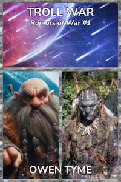

Rumors of War
Despite the inevitable side conflict, this series centers around one war in particular: a conflict between a race of intelligent machines and the organic life of the galaxy, but unlike most such tales, the heroes of this story are from a world of magic, which may be the only hope for the galaxy.
Troll War

 In a war between dwarves and trolls, which side would win? – That’s the question asked by a pair of nobles who set out to answer it, by fooling a kingdom of dwarves and a kingdom of trolls into thinking the other made the first move.
Years pass and the fighting spills into a neighboring human kingdom. Staff Sergeant Jane “Sureshot” Stanton is charged with a dangerous mission by the human king: end the war, at any cost. The battle fatigued human sharpshooter initially refuses a rifle, because she can’t use one without traumatic flashbacks.
An alien anthropologist, Brosla Ghinead, offers to join the mission, because evil, sentient machines are on the way and the locals need to become a unified force, lest they die! He’s convinced magic is vital for protecting the galaxy and ending the machine scourge.
Sureshot’s mission proves perilous at every turn and diplomacy quickly fails, forcing her to conclude the troll Queen must die to make way for peace.
With the stakes so high, will Sureshot pick up a rifle? Will she and Brosla manage to put the wily troll Queen down before the machines arrive and will the survivors be strong enough to fight?
Machine War

The second volume of Rumors of War focuses on the consequences of the climactic orbital battle from the end of the previous book. Among all the debris falling from orbit are many sentient machines, who go to work consuming resources, so they can continue their relentless campaign against the galaxy.
The alien machines arrive on the planet in gooey, egg-like enclosures designed to serve as disposable entry capsules, leaving them initially covered in an extra layer of armor-like ablative plastic, making the first waves of shock-troops all the more deadly.
The ground war focuses on wiping out the machines before they can build an FTL transmitter to call for backup, while the few machines left in orbit scramble to put out fires and shut down a dangerously unstable reactor, which they hope to repair, that they might get a transmitter of their own working.
Former enemies become allies as the locals band together for the sake of their lives, scrambling to present a unified front against the machines, which spread like a plague over the three kingdoms, while the gnomes work with the surviving aliens to produce a weapon capable of destroying what remains of the orbiting machine warship, because it’s in a better position to send a long-range signal.
Magic War
The events of Machine War largely went unregarded by the leader of the machines, who was focused on other things, but when the gnomes blasted its damaged warship out of orbit with a magic laser cannon so powerful, it punched a hole right through the moon, the machine overlord finally takes notice of the strange events!
With the planet having finally caught the eye of the entire swarm, every resource available is sent to the lone world that’s been capable of resisting, leading to all-out war between the people of that world and the machines.
The machines begin a detailed analysis of magic, seeking to capture wizards, witches and fairies, that they might study the phenomenon under laboratory conditions. Eventually, magic items are also captured. Over time, the machines begin to grasp the subtleties of magic, adapting it for their own use.
The war takes on new intensity as the machines begin employing enchanted weaponry and wizards of their own…
Galaxy War
Having successfully repelled the machine swarm, which backs off to calculate a new strategy, the trolls, dwarves and their allies turn their eyes upward, working with the surviving aliens and the gnomes to build star ships, that they might take the fight to the machines, hoping to end them once and for all.
Dimension War
Having weaseled out of the trap set by the dwarves and trolls, the master of the machines runs, taking refuge in another dimension occupied by the ancient race that seeded the galaxy with humanoid life, before they moved on.
Giving chase, the dwarves and trolls meet the gods of every species in the galaxy. Gods fight side by side with mortals to eradicate the fate-defying machine before it can finish its study of their divine physiology, in hopes of surpassing them.